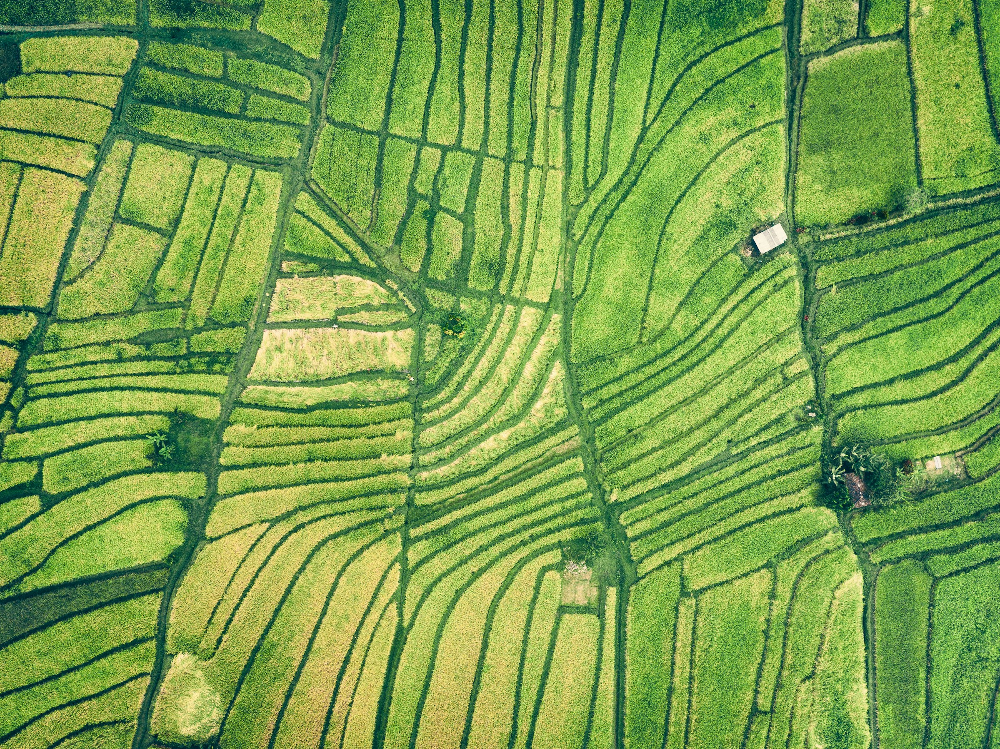
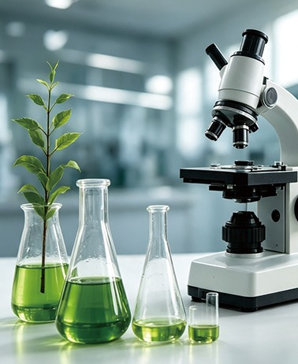
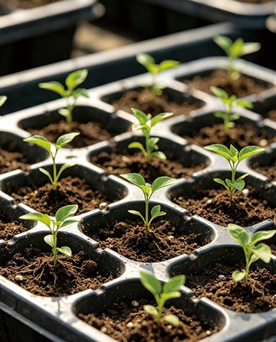
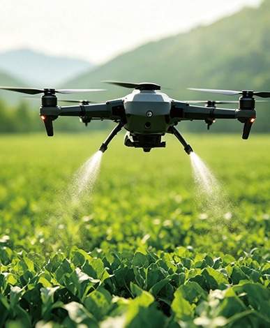
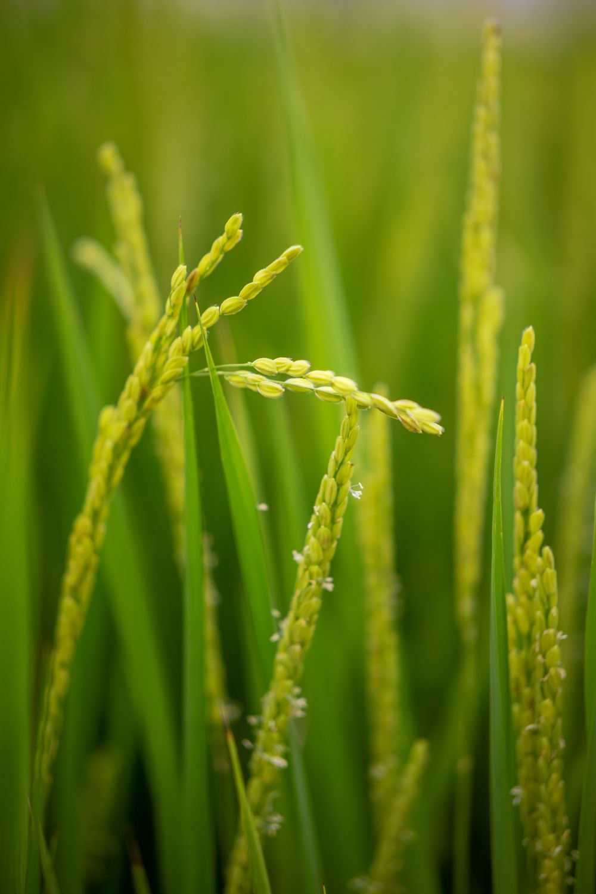
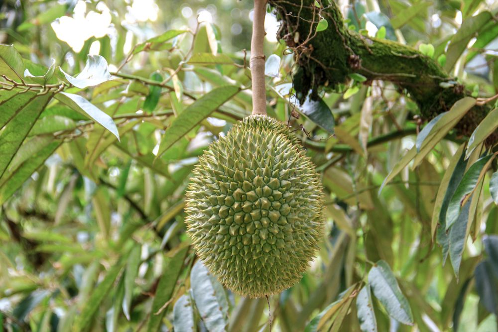
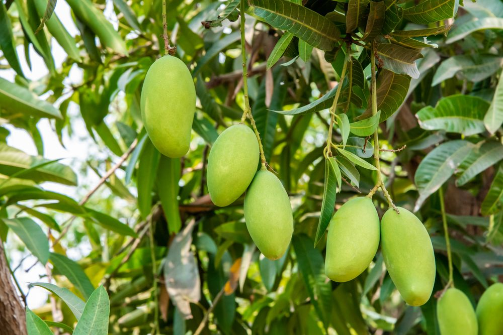
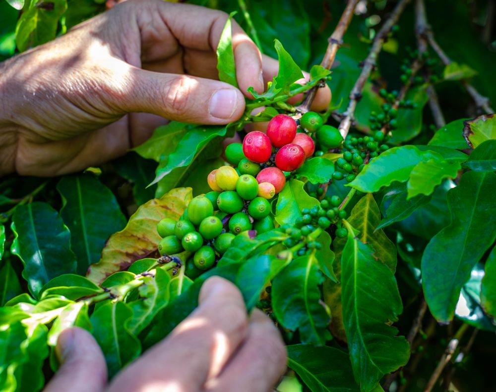

专业技术团队
融合植物营养、植保管理与作物栽培经验，为不同作物提供科学的管理建议。
PLANT HEALTH
我们坚持“营养优先、精准管理、综合防控”的理念，从土壤健康、根系发育、植物营养、生长调节到病虫害综合防控（IPM），为作物提供全生育期管理服务，帮助种植者实现更高产量、更优品质和更可持续的农业生产。
了解我们的理念
OUR APPROACH
把每一个生长阶段连接起来，让营养、管理与植保协同发挥作用。
改善土壤结构与肥力，为健康生长打好基础。
促进根系发育，支持水分与养分吸收。
科学匹配作物不同生育阶段的营养需求。
调节生长平衡，关注作物健康发育。
结合预防与综合防控，减少病虫害危害。
关注作物品质，支持优质、高产的农业生产。
MISSION
VISION
让植物更健康，让丰收更简单。
WHY US



融合植物营养、植保管理与作物栽培经验，为不同作物提供科学的管理建议。
从育苗到采收，跟踪作物生长，按生育阶段协调营养与病虫害管理。
通过研发、试验与验证，持续优化产品和方案，推动科研成果应用于农业生产。
结合本地种植条件，通过示范种植、田间试验和数据记录，持续改进管理方案。
坚持预防优于治疗，结合土壤、气候、作物长势及病虫害发生情况，动态调整管理。
将土壤、根系、营养、生长调控与综合植保连接起来，服务作物品质与产量目标。
CROP SOLUTIONS
围绕不同作物，持续完善针对性的管理方案。更多内容即将呈现。




CROP PROTECTION
从作物所需出发，连接适用的植保产品。产品目录正在完善中。
GROW WITH US